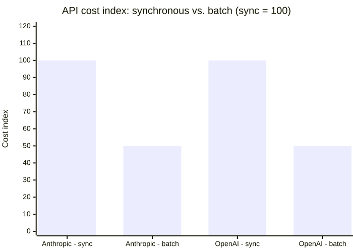

3 — The cheapest token is the one you don't send
Not every token-saving move is about using AI less. Some of it is just buying the same tokens cheaper, sending fewer of them for the same result, or routing the easy 90% away from the model entirely. None of it requires willpower. All of it requires knowing the levers exist — and most teams I talk to are using zero of the three below, not because they don't make sense, but because nobody's gone looking for them yet.
The first lever is the dumbest one, and it's the one most people leave on the table: if the response doesn't need to come back in real time, it shouldn't be priced like it does. Anthropic's Message Batches API and OpenAI's Batch API both cut the token price in half — flat 50% off standard rates, for anything you can queue instead of wait on. Nightly reports, bulk classification, eval runs, backfilling a dataset — none of that needs a synchronous response, and all of it is currently running at double the price it needs to for a lot of teams.

Same tokens, same model, half the price — the only cost is not needing the answer immediately.
That discount isn't a coupon, it's downstream of how the hardware actually works — and the same physics explains a pricing detail from the last post in this series that I glossed over: why output tokens cost roughly 5x more than input tokens, on every provider, including the exact Haiku 4.5 and Opus 5 numbers I quoted there. Inference has two phases with very different economics. Prefill — reading your entire prompt — happens in one parallel pass across all the input tokens at once: compute-bound, the GPU's tensor cores are busy the whole time, cheap per token. Decode — generating the output — happens one token at a time, and each single token requires a full pass through the model's weights: memory-bandwidth-bound, the GPU's compute sits mostly idle waiting on data to arrive. That asymmetry is why output is the expensive half of every API call, not a pricing quirk.

Input is a parallel read. Output is a sequential, one-token-at-a-time reload of the whole model — that's the whole reason it costs more.
It's also why batching pays for itself rather than just being a promotion: serving one request at a time wastes most of the GPU waiting on memory, but running many requests together lets that same weight-load be shared across far more tokens generated per pass — better hardware utilization, more tokens per GPU-hour, and idle capacity a provider can slot batch jobs into instead of holding a GPU in reserve for your one request right now. Neither Anthropic nor OpenAI has published the exact cost math behind the 50% figure itself, so treat that specific number as a business decision — but the mechanism that makes a discount like it affordable at all is real, documented, and the reason I'd bet on batch pricing sticking around rather than disappearing as a promo would.
The second lever shrinks what you send instead of what you pay per token. Microsoft Research's LLMLingua compresses prompts up to 20x with minimal measured loss on QA and reasoning benchmarks, and its follow-up, LongLLMLingua, found something sharper: in long-context RAG setups, compressing down to roughly a quarter of the original tokens didn't just cut cost — it improved task performance by up to 21.4%, because a shorter, denser context fights the "lost in the middle" problem that long contexts create in the first place. Cutting tokens and improving accuracy aren't in tension here. Stuffing a model's context window is a habit, not a requirement.
The third lever is the one with the most room to be misused, so it's worth being precise about it: don't call a model for a decision a deterministic system can make correctly and near-instantly. A regex, a keyword match, or a rules engine can resolve a large share of requests before a model ever needs to see them — open-source rules engines like GoRules' ZEN evaluate decisions in microseconds, not the hundreds of milliseconds a model call costs even before you count tokens.

The gate doesn't replace the model. It narrows what reaches the model down to the part that actually needs judgment.
But the honest version of this lever isn't "regex beats the model" — a Cleveland Clinic study published on medRxiv in January 2026 makes that precise. Extracting structured fields from free-text cardiac test reports, regex alone scored an F1 of 0.74 — good enough to look useful, not good enough to trust. Adding a targeted, on-premises LLM stage for exactly the fields regex got wrong pushed that to 0.98. The lesson isn't "skip the model." It's: let the deterministic layer handle everything it can handle correctly, and spend the model's judgment only on the fraction that actually needs it — which is a much smaller, and much cheaper, fraction than "every request."
Two things I looked into and would flag before you build a business case around them: semantic caching — tools like GPTCache or Redis's LangCache, which return a cached answer for a semantically-similar past query instead of re-calling the model — is mechanically sound, but neither vendor has published a real, audited hit-rate or dollar figure; the "70% savings" numbers circulating online trace back to blog posts, not disclosed deployments. Same caveat applies to most of the newer LLM-routing startups: real companies, plausible pitch, but the specific savings percentages you'll find for them are aggregator-blog math, not vendor-disclosed results. That doesn't make either idea wrong — a cache that returns a stored answer instead of a fresh generation is obviously going to save something on a repetitive workload — it just means you should run your own before-and-after on your own traffic before you put a number in a slide. Worth trying both. Worth verifying the number yourself before you repeat it.
None of these three levers touch how good the model is, how you prompt it, or how much AI your team uses. They touch the plumbing around it — when you call it, how much you hand it, and whether you needed to call it at all. That's the whole point of tokenmaxxing done right: the savings that don't cost you anything to take.